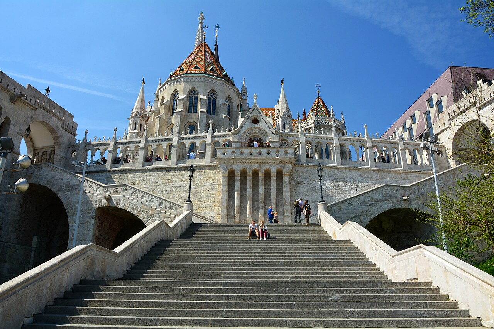

크라쿠프 프라하
확인- 수단
- 기차 · ČD EC · Leo Express · RegioJet 직행
- 소요
- 약 6시간 장거리
- 환승
- 직행
직행 하루 여러 편, 5시간 45분~7시간. 모든 직행 열차는 좌석 지정 필수. 야간열차도 있으나 편성이 해마다 바뀝니다.
중부유럽 · 폴란드 · 아드리아해
Kraków to Dubrovnik in three weeks
Rick Steves의 동유럽 3주 일정처럼 폴란드에서 아드리아해까지 내려가는 대장정.



크라쿠프·프라하·부다페스트를 본 뒤 류블랴나와 자그레브를 거쳐 스플리트, 두브로브니크로 내려갑니다. 해외 가이드는 프라하 3일, 부다페스트 3~4일, 류블랴나 2일, 두브로브니크 2~3일 배분을 권합니다.


지도: © OpenStreetMap 기여자
현지 18박 19일 · 크라쿠프 3박 → 프라하 4박 → 부다페스트 3박 → 류블랴나 2박 → 자그레브 1박 → 스플리트 2박 → 두브로브니크 3박
도착 인천 → 크라쿠프 공항. 도착일은 숙소 주변 위주로 가볍게.
플로리안 문 → 리네크 광장(직물회관·성 마리아 성당 나팔 소리) → 바벨 성·대성당 → 비스와 강변.
바벨 성 전시는 구역별 입장권이라 미리 고르세요.
숙박: 크라쿠프
카지미에시 유대인 지구 → 쉰들러 공장 박물관 → 게토 영웅 광장, 저녁에는 자피에칸카와 카페.
숙박: 크라쿠프
아우슈비츠-비르케나우 박물관(공식 사이트 사전 예약 필수, 왕복 포함 6~7시간) 또는 비엘리치카 소금광산(반나절).
두 곳을 하루에 묶으면 매우 벅찹니다. 하루에 한 곳을 권합니다.
숙박: 크라쿠프
이동 크라쿠프 → 프라하 · 기차 약 6시간 확인
구시가 광장·천문시계 → 틴 성당 → 카를교 → 캄파섬. 해 질 무렵 블타바 강변에서 프라하성 야경.
천문시계는 매 정각에 움직입니다. 광장·카를교는 소매치기에 주의하세요.
숙박: 프라하
프라하성(성 비투스 대성당·황금소로) → 로레타 → 스트라호프 수도원 전망 → 말라스트라나 골목 → 페트린 언덕.
성은 오전 9시 개장 직후가 한산합니다.
숙박: 프라하
요세포프 유대인 지구 → 바츨라프 광장 → 국립박물관 → 비셰흐라드 요새 산책, 저녁에는 체코 맥줏집.
숙박: 프라하
기차로 약 1시간. 세들레츠 해골성당과 성 바르바라 대성당을 반나절에 돌아보고 프라하로 복귀.
카를슈테인성(기차 40분)으로 바꿔도 좋습니다.
숙박: 프라하
이동 프라하 → 부다페스트 · 기차 약 6시간 50분 확인
어부의 요새 → 마차시 성당 → 부다 왕궁 → 세체니 다리 → 도나우 강변에서 국회의사당 야경.
야경은 유람선이나 겔레르트 언덕에서도 좋습니다.
숙박: 부다페스트
국회의사당(내부 투어 예약) → 성 이슈트반 대성당 → 안드라시 거리 → 영웅 광장 → 세체니 온천.
온천은 수영복·슬리퍼를 챙기면 대여비를 아낍니다.
숙박: 부다페스트
중앙시장 → 겔레르트 언덕 → 도하니 거리 시나고그 → 폐허 바(루인 바) 거리.
숙박: 부다페스트
이동 부다페스트 → 류블랴나 · 기차 약 7시간 30분 확인
프레셰렌 광장 → 삼중교 → 플레치니크 시장 → 용의 다리 → 류블랴나 성(푸니쿨라) → 류블랴니차 강변 카페.
금요일(봄~가을)에는 "오픈 키친" 음식 장터가 열립니다.
숙박: 류블랴나
버스 약 1시간 → 포스토이나 동굴 열차 투어 → 절벽에 박힌 프레드야마 성(여름 셔틀).
동굴 안은 일 년 내내 10℃ 안팎입니다.
숙박: 류블랴나
이동 류블랴나 → 자그레브 · 기차 약 2시간 20분 일반
반 옐라치치 광장 → 돌라츠 시장 → 자그레브 대성당 → 성 마르코 성당 → 로트르슈차크 탑 → 실연 박물관.
12월 "어드벤트 자그레브"는 유럽 최고 크리스마스 마켓으로 여러 번 뽑혔습니다.
숙박: 자그레브
이동 자그레브 → 스플리트 · 버스 약 5시간 일반
디오클레티아누스 궁전(페리스틸·지하 궁전·성 도미니우스 종탑) → 리바 해안 산책로 → 마리안 언덕 일몰.
숙박: 스플리트
트로기르 구시가지(버스 약 30분) 또는 크르카 국립공원 당일 투어, 여름에는 흐바르·브라치 섬 당일치기.
카슈니 해변은 구시가지에서 걸어서 20~30분입니다.
숙박: 스플리트
이동 스플리트 → 두브로브니크 · 버스 약 4시간 30분 일반
필레 문 → 스트라둔 대로 → 성벽 한 바퀴(약 2km) → 스르지산 케이블카 일몰.
성벽은 개장 직후나 늦은 오후가 덜 덥고 덜 붐빕니다.
숙박: 두브로브니크
로브리예나츠 요새 → 로크룸섬(배 15분) 수영·산책 → 반예 해변 → 구항구 저녁.
숙박: 두브로브니크
엘라피티 군도 배 여행, 차브타트 마을, 또는 스톤 성벽과 굴 양식장(펠예샤츠 반도).
숙박: 두브로브니크
오전에 못 본 곳을 둘러보고 공항으로 이동합니다. 귀국편은 대부분 다음 날 한국에 도착합니다.
직행 하루 여러 편, 5시간 45분~7시간. 모든 직행 열차는 좌석 지정 필수. 야간열차도 있으나 편성이 해마다 바뀝니다.
6시간 40분~7시간. 야간열차도 있습니다.
열차 약 7시간 30분, 버스는 6시간 안팎.
하루 4~6회. FlixBus도 2시간 20분 안팎.
버스 5~6시간, 기차(야간 포함)도 비슷합니다.
버스 4시간~4시간 30분. 2022년 펠예샤츠 대교 개통으로 보스니아 국경을 거치지 않는 편이 많습니다.
국경 모두 솅겐 지역입니다.
바르샤바(LOT)·헬싱키·프랑크푸르트·뮌헨·이스탄불 등에서 1회 경유. 바르샤바 직항 + 기차(약 2시간 30분)도 방법입니다.
이스탄불·프랑크푸르트·뮌헨·비엔나 등에서 1회 경유. 겨울에는 편수가 크게 줄어 2회 경유가 될 수 있습니다.
5·9월
11~3월
해안에서 수영하려면 9월이 좋습니다.


중기·장기(7~8박) · 3개국 · 추천 5·9·12월
첫 동유럽 여행의 정석. 직항으로 들어가 직항으로 나오고, 세 도시를 레일젯 직행으로 잇습니다.


중기(5~6박) · 2개국 · 추천 5·9·10월
프라하에 동화 같은 중세 마을 하나를 더해 비엔나로 빠져나가는 일주일 코스.


중기·장기(7~9박) · 3개국 · 추천 4·5·9월
비엔나를 건너뛰고 체코·슬로바키아·헝가리 세 나라를 한 철도 노선으로 잇는 실속 코스.


중기(5~6박) · 3개국 · 추천 4·10·12월
도나우강을 따라 세 수도를 잇는 5~7박 단기 코스. 12월 크리스마스 마켓 여행으로 특히 인기.
정보 확인일 2026-11-21